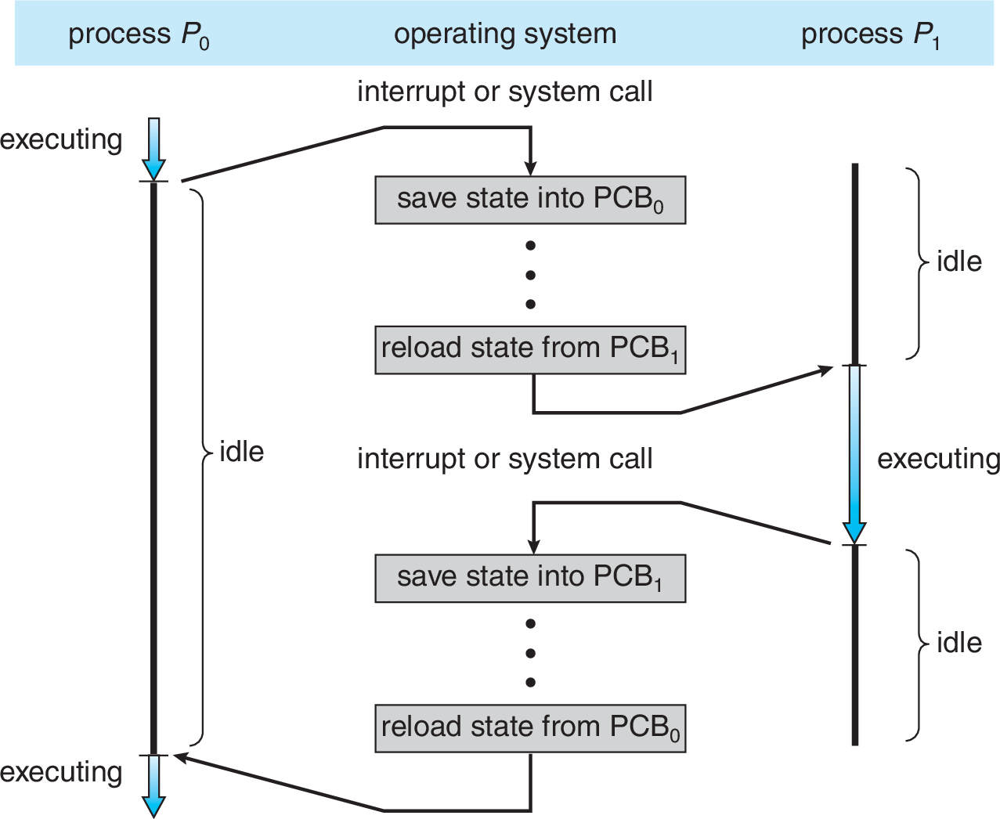
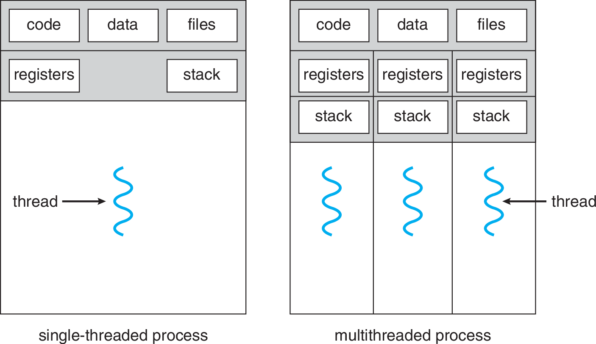

Semestre 1/2016
Cristian Ruz - cruz@ing.puc.cl
Departamento de Ciencia de la Computación
Pontificia Universidad Católica de Chile
Un programa en ejecución
Proceso = Código + Recursos
¿Qué hay en un Proceso?
Cada item del stack representa una función, por lo que tiene:
Memoria asignada dinámicamente (durante la ejecución)
Un proceso en ejecución puede cambiar de estado
¡Un autómata!
¿Cómo averiguo el estado de un proceso?
Desde un terminal
$ htop || top || ps auxEn C
#include "sys/types.h"
#include "sys/wait.h"
/* ... */
int status;
pid_t return_pid = waitpid(process_id, /*out*/ &status, WNOHANG);
switch(return_pid) {
case 0:
/* Still running */
case process_id:
/* Child terminated. Exit status in 'status' */
case -1:
default:
/* Error */
}O con un Administrador de Procesos
¿Cómo represento un proceso?
Process Control Block (PCB)
El cambio de procesos se conoce como Context Switch
Creación de procesos: ¿el huevo o la gallina?
Existe un proceso llamado 'init' que es construido durante la inicialización del kernel. Usualmente tienen asignado el ProcessID 1.
Como todos los procesos tienen un padre, forman un árbol de procesos
$ pstree --show-pidssystemd(1)─┬─crond(572)───rsync(984)
├─dbus-daemon(563)
├─konsole(30672)───zsh(30675)───tmux(11098)
├─systemd(756)─┬─ncmpcpp(759)
│ └─emacs(773)─┬─aspell(798)
│ └─{gmain}(774)
├─systemd-logind(573)
└─tmux(11100)─┬─zsh(9853)
└─zsh(11221)───vim(13615)Si un proceso crea a un proceso (hijo).
Syscalls
Crea un nuevo proceso como copia del padre.
Ambos continúan ejecutando desde la instrucción posterior a fork
La llamada retorna* el PID del hijo al padre y 0 al hijo
Carga un binario en memoria reemplazando el código de quien lo llamó, e inicia su ejecución.
Básicamente otro programa se roba el proceso
¿Qué imprimen los programas?
int a = 42;
pid_t child_pid = fork(); /* create new process */
if (child_pid == 0) { /* child gets 0 */
a++;
printf("CHILD: a is : %d\n", a); /* ??? */
}
else if(child_pid > 0) { /* parent gets the new pid ('random' number) */
printf("PARENT: child_pid is %d\n", child_pid);
printf("PARENT: a is %d\n", a); /* ??? */
}¿Cuántos procesos se crean?
/* ... */
for(int i=0; i<4; i++) {
fork();
printf("[%4d] %d\n", getpid(), i);
}Usualmente, después del fork(), uno de los dos (el hijo) ejecuta un exec().
Syscalls
Clona el proceso.
Reemplaza el proceso por otro
Espera a un proceso hijo termine de ejecutar.
Todo proceso, al terminar su ejecución, ejecuta exit()
El código de retorno se utiliza para avisar cómo resultó la ejecución
0 cuando no hubo problemas0 para indicar un problemaSyscalls
Clona el proceso.
Reemplaza el proceso por otro
Espera a un proceso hijo termine de ejecutar.
Termina el proceso con un código de retorno dado.
Envía una señal a otro proceso (típicamente SIGTERM)
Se puede especificar la señal (SIGKILL no tiene piedad)
Si el padre muere, ¿deben morir los hijos?
Huérfanos y zombies: the walking process
Proceso terminado no se borra inmediatamente de la tabla de procesos.
wait()wait() la entrada del hijo se borra de la tabla¿Cómo se hace en Linux?
/* Un proceso (hijo) termina... */
exit(1);/* El padre consulta el estado */
int status;
pid_t pid = wait(/*out*/ &status); /* Ahora 'status' tiene el código de retorno */
/* Ahora el SO puede terminar de eliminar el proceso hijo */Si el padre tenía varios hijos, ¿a cuál esperamos recién?
¿Y si el padre jamás hace wait()?
wait(), el hijo queda huérfano (zombie).initinit llama periódicamente a wait() para deshacerse de los huérfanos (reaps zombies).Creando zombies
#include "sys/wait.h"
#include "stdlib.h"
#include "unistd.h"
pid_t pids[10];
void main() {
for (int i=9; i>=0; i--)
if ((pids[i]=fork()) == 0) { /* pid == 0, only child enters */
sleep(i+1); /* Wait and terminate */
exit(0);
}
for (int i=9; i>=0; i--) /* Only root process reaches */
waitpid(pids[i], NULL, 0); /* First wait [9] is the longest */
}InterProcess Comunication (IPC)
Si hay multiprogramación, hay múltiples procesos "en ejecución"
Dos modelos fundamentales de IPC:
Memoria compartida vs. Paso de mensajes
Memoria Compartida
Procesos acuerdan un espacio de memoria donde ambos pueden escribir
Paso de Mensajes
Procesos se envían mensajes
send/recv¿Escribir en memoria de otro proceso?
API POSIX provee syscall para crear y exponer regiones de memoria compartida
shm_open(), ftruncate(), mmap(), shm_unlink()Abstracción de mensaje. Dos primitivas:
send(message)receive(message)Comunicación directa vs indirecta
Con comunicación directa, cada proceso debe conocer el nombre del otro
send(P, message)receive(Q, message)Este esquema es simétrico. Variante asimétrica: receive(&id, message)
Con comunicación indirecta utiliza abstracción de mailbox o port
send(A, message)receive(A, message)Ambos deben poseer un referencia al mailbox A
Comunicación síncrona vs asíncrona
Tanto send() como receive() pueden ser bloqueantes (síncrono) o no bloqueantes (asíncrono)
send bloqueante: bloquea hasta que el mensaje es recibidosend no-bloqueante: envía y continúarecv bloqueante: espera hasta recibir un mensajerecv no-bloqueante: recibe un mensaje inmediatamente o nullThread: Como un proceso, pero más liviano.
Unidad básica de uso de CPU
¿y el resto?… compartido con un proceso
Single-threading vs Multi-threading
Procesos pueden tener uno o más threads
Multi-threading
Si voy a ejecutar parte del mismo código, talvez no necesito crear un proceso nuevo.
Es como hacer fork() ¿y … hacer exec()?
Multi-threading
Otro caso: un web server necesita atender múltiples conexiones
Multi-cores y Multi-threading
Con single-core solo un thread de un proceso puede ejecutar al mismo tiempo
¿Cómo se provee la ilusión de que múltiples threads ejecutan simultáneamente?
… ¡pero ahora hay multi-cores!
Multi-cores y Multi-threading
¿Cuánto gano?
Gene Amdahl propuso una fórmula (1967) para calcular la mejora potencial de un programa que contiene partes paralelizables y partes secuenciales
$$\mathit{speedup} \leq \frac{1}{s + \frac{\bar{s}}{N}}$$
Midiendo paralelismo
El speedup es un valor positivo que indica la mejora de un código paralelo respecto a su versión secuencial
$$\mathit{speedup} = \frac{T_{\mathit{secuencial}}}{T_{\mathit{paralelo}}} = \frac{T_{1}}{T_{N}}$$
Ejemplo: $\mathit{speedup}=2$ signfica que $T_{1}=2T_{N}$, dos veces más rápido
Sea $T_N$ el tiempo de ejecución con $N$ cores, y $s \in (0, 1]$ la fracción de código estrictamente secuencial
El tiempo en $N$ cores se puede definir como:
Por lo tanto el speedup es:
$$\mathit{speedup} = \frac{T_1}{T_N} = \frac{T_1}{T_1 \left( s + \frac{\bar{s}}{N} \right)} = \frac{1}{s + \frac{\bar{s}}{N}}$$
Modelos de multithreading
Dos tipos de threads
¿Cómo se relacionan kernel y user threads?
Many-to-one
Solaris: biblioteca green threads
One-to-one
Linux & Windows
Many-to-many
Bibliotecas de threads
Tres principales:
pthreadPOSIX standard IEEE 1003.1c (especificación)
API para creación y sincronización de threads.
Implementaciones para Linux, Mac OS X, Solaris
pthread_t, identificadorpthread_create(), creación de threadpthread_join(), padre espera que hijo(s) termine(n)pthread_exit(), termina el thread actualDisponible nativamente en Windows API (kernel threads)
HANDLE, permite acceder al thread (puntero)CreateThread(), creación de threadWaitForSingleObject() padre espera que hijo termineWaitForMultipleObjects() padre espera que hijo(s) termine(n)CloseHandle(), borra el thread indicadoImplementado como biblioteca nativa en la JVM
Se consideran user threads ya que la JVM ejecuta sobre algún Sistema Operativo host
Thread y hacer override del método run()Runnablestart()run() iniciando la ejecución del threadjoin()fork/exec y señalesAún quedan algunas situaciones "poco claras"
fork() y exec() en proceso multithreadedexec() reemplaza todos los threads?